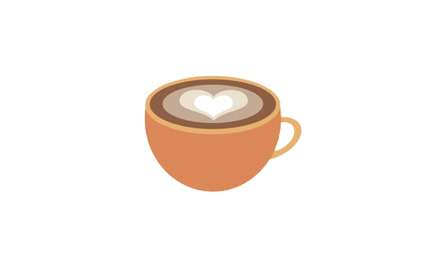

Homebrew Coffee
This section is about the basics of coffee, how you can brew it,
the science of brewing coffee and the common misconceptions of basic
coffee brewing.
 Both iced and hot coffee are made from the same product, but what seperates all the different types of coffee is how it is roasted and brewed. Hot brew drip coffee as you can guess from the name is the use of a coffee filter with the coffee dust loaded in then hot water poured into the filter to allow the coffee to drip through in liquid form, this method is used for iced coffee but can take days to proccess and chill, because of this method iced drip coffee is usually higher in caffine. Then the usual home brew made coffee is through coffee granuels or coffee dust just poured into a cup and then the extra's a person enjoys.
Now for the actual brewing proccess, to get into the science behind it, the solubles in coffee dissolve effectively at 90°C - 96°C for international readers that's 195°F - 205°F, now for most people in the UK dependant on area and the water they have, due to impurities in the water our kettles tend to boil the water at about 105°C, which then would be poured into the coffee and sugar/sweetner mixture which would then burn the coffee producing a rusty taste to the coffee offsetting the natural flavour of the drink, with clean spring water and a kettle that allows you to set a max boiling temperature you can make your own perfect cup of coffee.